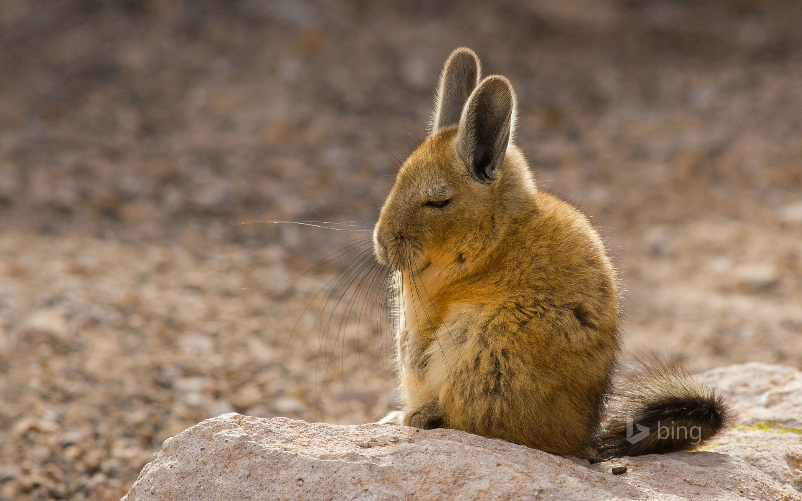

El puma ocupa más territorio que cualquier otro animal silvestre terrestre en América. Su territorio abarca 110 grados de latitud, desde el norte del Yukón en Canadá al sur de Los Andes. Su amplia distribución se debe a su capacidad de adaptación a casi todo tipo de hábitat: se encuentra en todos los tipos de bosques, así como en las tierras bajas y desiertos montañosos. Los estudios muestran que el puma prefiere las regiones con vegetación densa, pero puede vivir con poca vegetación en zonas abiertas. Su hábitat preferido son cañones, escarpes, terrenos rocosos y la selva densa.
Los pumas son felinos esbeltos y ágiles. La talla adulta de pie es de alrededor de 60 a 80 cm de altura en los hombros. La longitud de los machos adultos es de alrededor de 2,4 m de largo de la nariz a la cola, aunque en general oscila entre 1,5 y 2,75 m. Los machos tienen un peso promedio de entre 53 a 72 kg. En casos raros, algunos pueden llegar a pesar más de 120 kg. El peso promedio de las hembras está entre 34 y 48 kg.16 El tamaño del puma es más pequeño cerca del Ecuador, y mayor en las poblaciones más cercanas a los polos. La cabeza del puma es redonda y las orejas están erguidas. Posee poderosas patas delanteras, cuello, mandíbula y colmillos que le sirven para atrapar y matar grandes presas. Tiene cinco garras retráctiles en las patas delanteras, útiles para aferrarse a la presa, y cuatro de las patas posteriores.
La Unión Internacional para la Conservación de la Naturaleza (UICN), ha cambiado el estatus del puma de preocupación menor a especie casi amenazada, dejando abierta la posibilidad de que pueda ser catalogado como vulnerable cuando se disponga de más datos sobre su distribución. El puma está regulado en el Apéndice I de la Convención sobre el Comercio Internacional de Especies Amenazadas de Fauna y Flora Silvestres (CITES), lo que hace ilícito el comercio internacional de especímenes o sus partes.
|  |